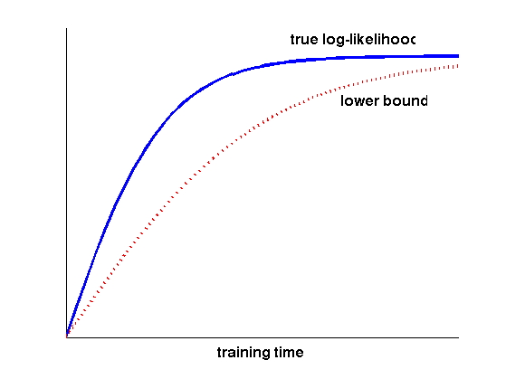
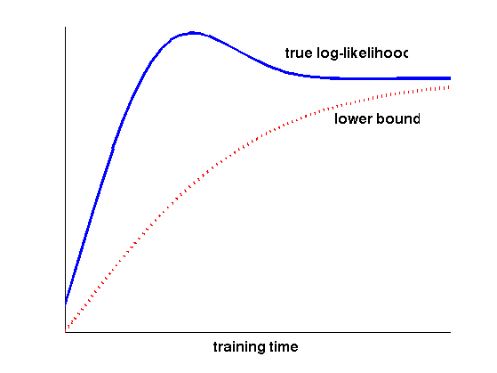

function varEMbound
x = 0:0.1:4;
figure(1); clf; hold on;
y1 = logistFn(x, 2);
plot(x, y1, '-b', 'LineWidth', 3);
text(2.3,1.03, 'true log-likelihood', 'FontSize', 16, 'FontWeight', 'bold');
y2 = logistFn(x, 1);
plot(x, y2, ':r', 'LineWidth', 3);
text(2.8,0.92, 'lower bound', 'FontSize', 16, 'FontWeight', 'bold');
ylim([0.5, 1.05]);
set(gca, 'XTick', [], 'YTick', []);
xlabel('training time', 'FontSize', 16, 'FontWeight', 'bold');
hold off;
printPmtkFigure('varEMbound1')
figure(2); clf; hold on;
y1 = logistGaussFn(x, 2, 1, 0.9);
plot(x, y1, '-b', 'LineWidth', 3);
text(2.3,1.05, 'true log-likelihood', 'FontSize', 16, 'FontWeight', 'bold');
y2 = logistFn(x, 1);
plot(x, y2, ':r', 'LineWidth', 3);
text(2.8,0.92, 'lower bound', 'FontSize', 16, 'FontWeight', 'bold');
ylim([0.5, 1.1]);
set(gca, 'XTick', [], 'YTick', []);
xlabel('training time', 'FontSize', 16, 'FontWeight', 'bold');
hold off;
printPmtkFigure('varEMbound2')
end
function y = logistFn(x, lambda)
y = 1 ./ (1 + exp(-lambda*x));
end
function y = logistGaussFn(x, lambda, mu, sigma)
y = 1 ./ (1 + exp(-lambda*x)) + (1 / (2*pi*sigma))*exp( -(x - mu).^2/(sigma^2) );
end
 